Обзор
Сочлененные разрушаемые объекты можно настроить так, чтобы они разваливались на более мелкие части при отделении от соединения. Например, деревянный знак падает с указателя. и разбивается на несколько досок. Свойства объекта должны содержать информацию об используемых частях. Части должны быть связаны с объектом, который раньше был целым. На части также должна быть ссылка в свойствах объекта/UDP этого объекта.
Прежде чем читать этот раздел, обязательно ознакомьтесь с документацией по созданию Сочлененные хрупкие предметы.
Настройка в 3ds Max
Пример файла 3ds Max
Базовая настройка и именование
Ниже — простая сцена с вывеской. Объекты синего цвета — это части, которые появляются при сильном ударе по красному знаку. Убедитесь, что у них также есть свои собственные физические прокси. Как вы, возможно, читали в документации по разрушаемым объектам, соединения удерживают знак на месте до тех пор, пока не ударят, и соединение не разорвется.
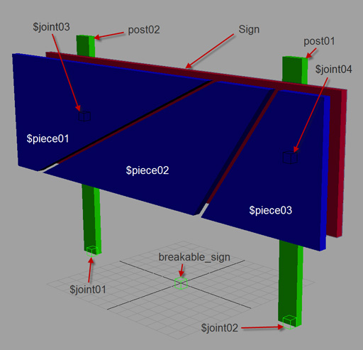
Иерархия
Части, которые появляются при ударе по объекту, должны быть дочерними элементами исходного объекта, в данном случае красного знака. Все остальное является дочерним элементом узла экспорта (breakable_sign).
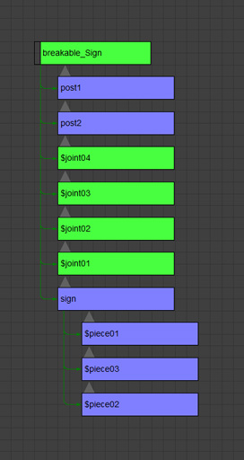
Свойства объекта
Вы должны указать части, которые будет порождать красный знак, в свойствах объекта, как показано на рисунке ниже. Также не забудьте присвоить свойства отдельным частям.
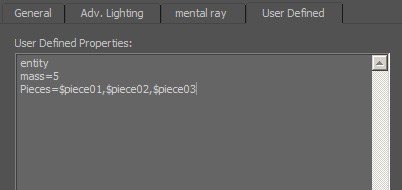
Как только все будет настроено, экспортируйте в .cgf и проверьте его в движке.
Полный список строк свойств можно найти .
Настройка в Maya
Образец файла
Иерархическая настройка
cryexportnode_filename — это верхний узел, содержащий свойства экспорта объекта. Выберите узел CryexportNode, откройте экспортер и нажмите «Добавить атрибуты». Появится новая вкладка в окне экспорта. Выберите формат .cgf для этого ресурса.
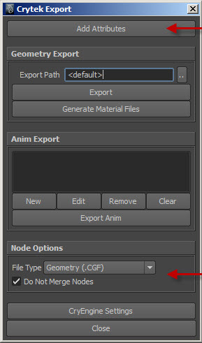
Все объекты, которые вы хотите экспортировать, должны быть дочерними элементами этого узла. Ниже вы можете увидеть иерархию того, как были расположены сочлененные части знака:
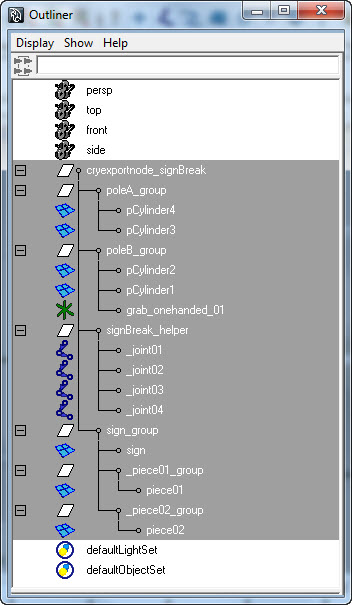
Соединения называются _joint$$ ($$ заменяется номером соединения). Чтобы добавить части, на которые определенная сочлененная деталь разобьется при разъединении, сделайте их дочерними элементами сочлененной детали. Для большей ясности смотрите картинку ниже:
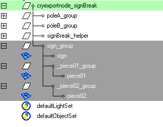
Обратите внимание, что _piece01_group и _piece02_group являются дочерними элементами sign_group. Соглашение об именах должно быть _piece$$_group ($$ заменяется номером детали). Итак, знак разобьется на эти части после того, как его разъединят.
Вот скриншот, на котором показано, как выглядят детали:
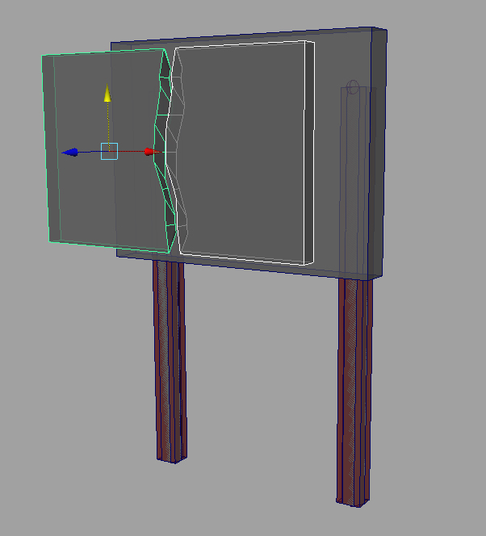
Пользовательские атрибуты
Каждый узел группы должен иметь дополнительные атрибуты. Это можно сделать, выбрав группу и на вкладке Crytek нажмите UDP (Пользовательские свойства).
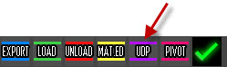
Большинство узлов группы должны иметь атрибут Масса/Плотность, за исключением узла группы filename_helper (в этом примере он называется signBreak_helper). Если вы хотите, чтобы части остались после распада, обязательно введите «entity».
Полный список строк свойств можно найти .
Для объекта, который распадается на дополнительные части, вам необходимо добавить пользовательский строковый атрибут в его узел группы. В нашем примере выберите sign_group и нажмите «Добавить атрибуты». Выберите тип данных String с длинным именем «pieces».
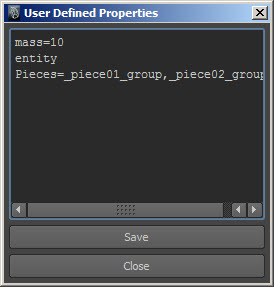
Здесь вы можете указать части, которые знак объект-сетка разобьется на: штук=_piece01_group, _piece02_group
Каждый _piece$$_group должен иметь массу. Кроме того, каждое разрушаемое соединение должно иметь предел.
После этого вы можете экспортировать файл cgf и протестировать его в игре.
Настройка в XSI
Пример файла XSI
Иерархическая настройка
CryExportNode — это верхний узел, содержащий свойства экспорта объекта.
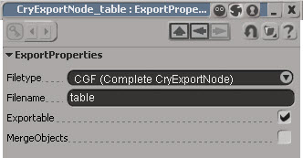
Все объекты, которые вы хотите экспортировать, должны быть дочерними элементами этого узла.
Ниже вы можете увидеть иерархию настройки соединяемых частей стола:
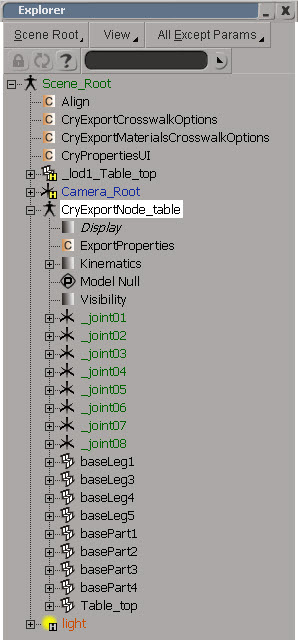
Соглашение об именах для создания соединений такое же. Чтобы добавить части, на которые определенная сочлененная деталь разобьется при разъединении, сделайте их дочерними элементами сочлененной детали. Для большей ясности смотрите картинку ниже:
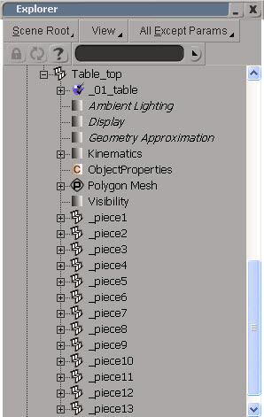
Обратите внимание, Table_top Объект-сетка имеет несколько дочерних объектов-сетей. Это кусочки, которые Table_top объект-сетка разобьется после того, как он будет разделен.
Вот скриншот, на котором показано, как выглядят детали:
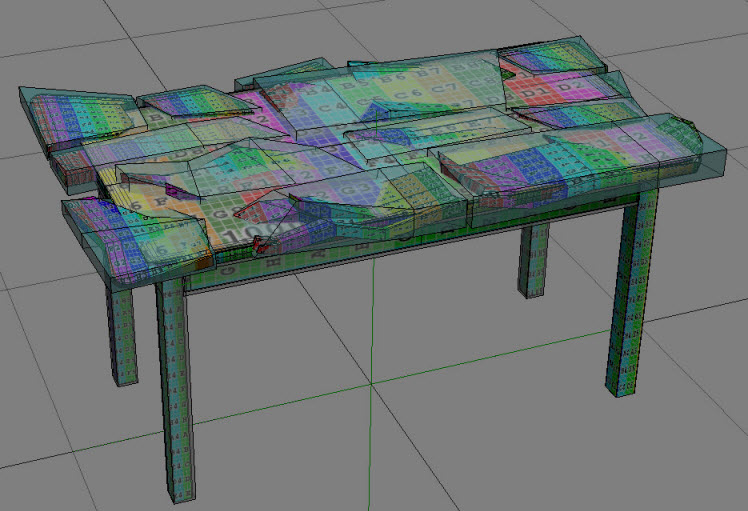
Пользовательские свойства
Вам необходимо добавить свойства пользователя узла в Table_top сетчатый объект.
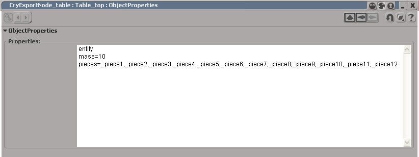
Здесь вы можете указать части, которые Table_top объект-сетка разобьется на: Pieces=_piece1,_piece2,_piece3,_piece4,_piece5,_piece6,_piece7,_piece8,_piece9,_piece10,_piece11,_piece12
Для каждой части добавьте свойства пользователя узла, выбрав сетку и перейдя к Crytek > Свойства пользователя узла.
Вы можете назначить массу каждой детали.
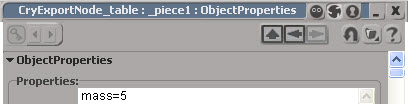
Каждая из этих частей должна иметь свою собственную прокси-сетку.
Полный список строк свойств можно найти .
Настройка в Sandbox
Теперь вы можете поместить объект в Sandbox как разрушаемый объект и наблюдать, как разбивается стол.
Начните с размещения BreakableObject на своем уровне с RollupBar > Объект > Физика каталог.
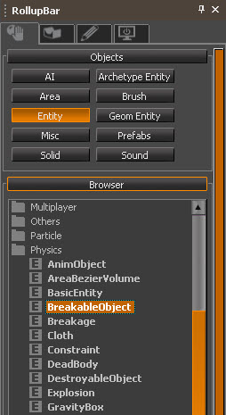
Затем, выбрав BreakableObject, измените Модель из свойств сущности.
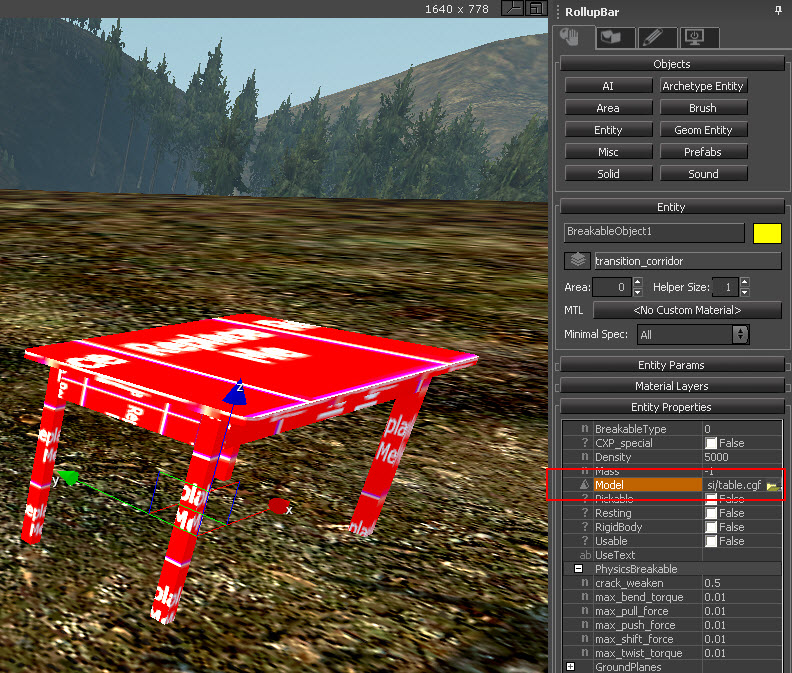
Теперь настройте текстуры стола в файле Material Editor.
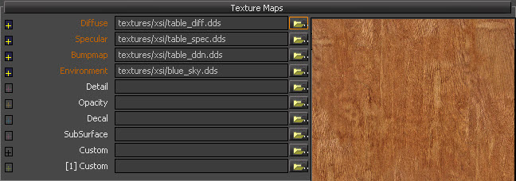
Наконец, проверьте стол, постреляв в игровом режиме.
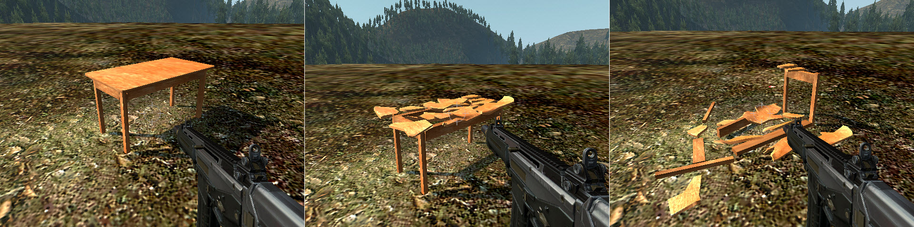